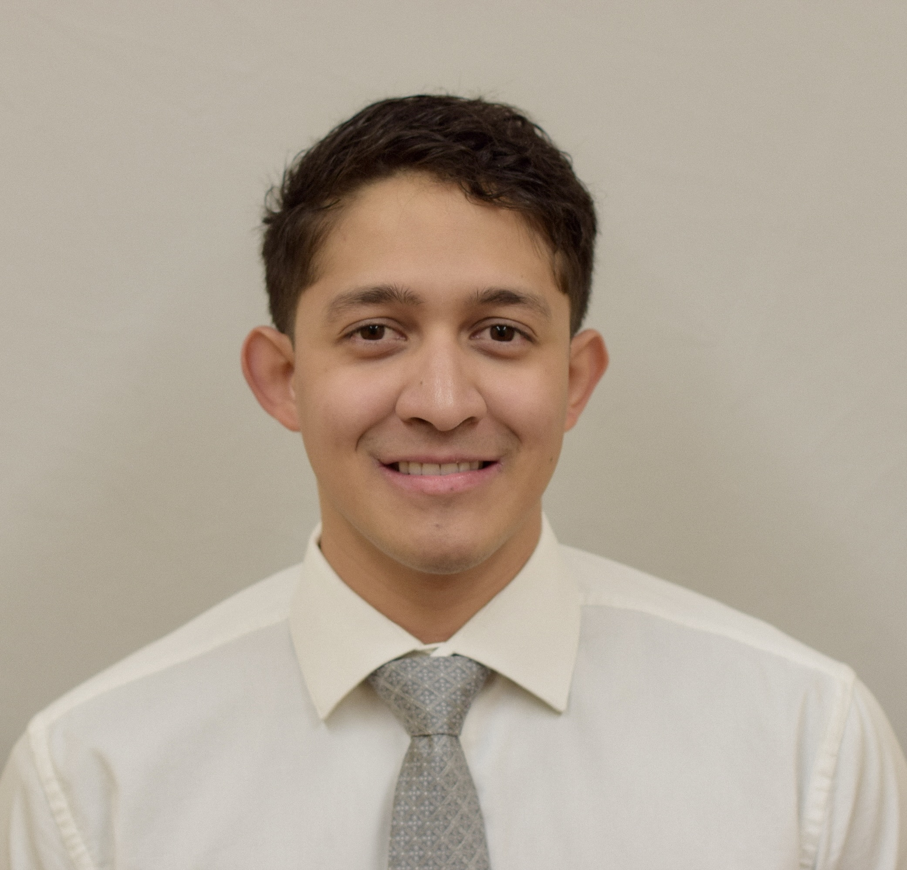

Javier Redondo
Summary
Motivated Computer Science student seeking to develop experience in web development.
Education
Queens College
Expected Graduation: May 2025
B.A. in Computer Science. Economics Minor
Aviation High School
Regents Diploma
Work Experience
Jetblue Airways
JFK Airport, New York City, New York
January 2022 - Auguest 2022
Ground Operations Crew
- Worked under pressure in a highly dynamic environment
across two terminals managing hundred of customer luggage,
aircraft marshaling, and operating airport vehicles.
Department of Defense
U.S. Marine Corps
MCAS Cherry Point, North Carolina
May 2019 - May 2021
Collateral Duty Inspector
- Entered, updated, and maintained maintenance logs using
a standardized computer system for 6 work centers in the
Airframes section improving maintenance workload efficiency.
- Worked as a Quality Assurance representative to routinely
inspect proper maintenance performed in accordance with
Illustrated Parts Catalogs and Structural Repair Manuals.
- Trained and ensured personnel adhered to all procedures and
policies regarding Tool Control, Safety, Support Equipment
use and FOD Control.
Division Assistant Environmental Coordinator
- Ensured compliance with Environmental Affairs Department for
all hazardous materials throughout 9 work centers in Airframes
Division resulting in 100% audit readiness.
- Sole qualified Resource Conservation and Recovery Act Waste
Handler for 7 months; organizing and transporting HazMat waste
from 4 different work centers.
March 2017 - May 2021
Airframer
- Performed preventative maintenance, structural repairs, and tire overhaul.
- Performed troubleshooting on equipment, interpreted and cross
referenced documents using online and physical manuals, schematics,
and publications.
Skills
Awards, Achievements and Certifications
Airframes and Powerplant Maintenance License